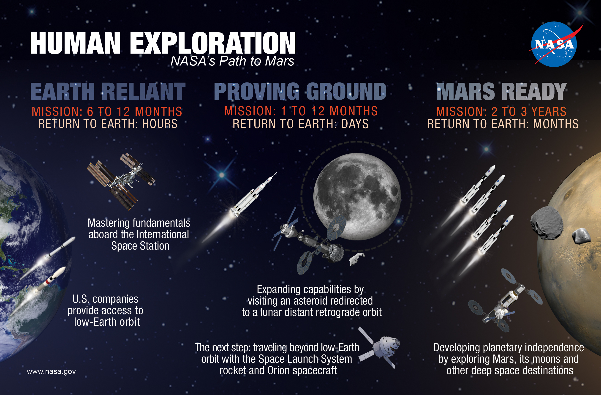
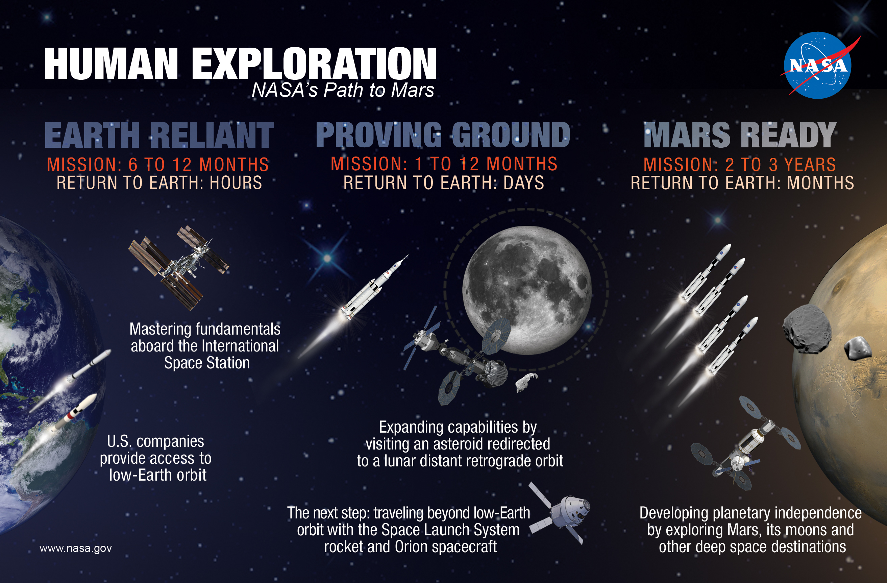
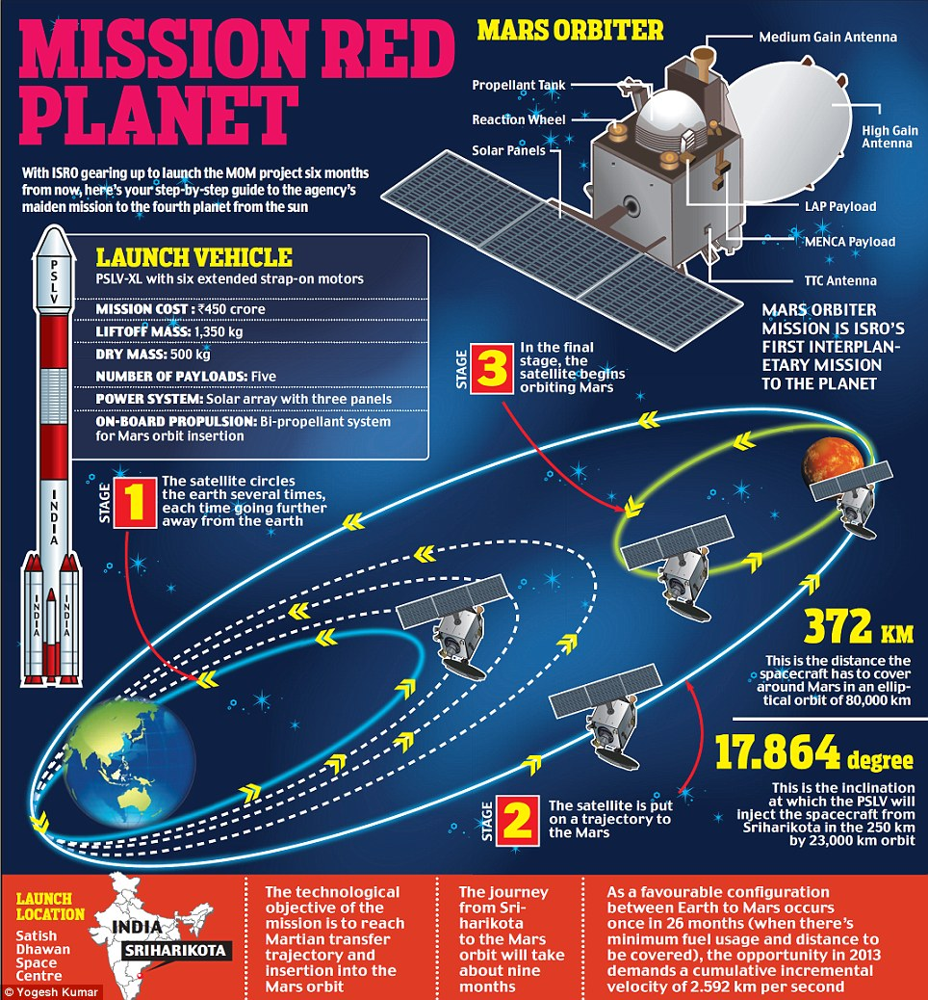
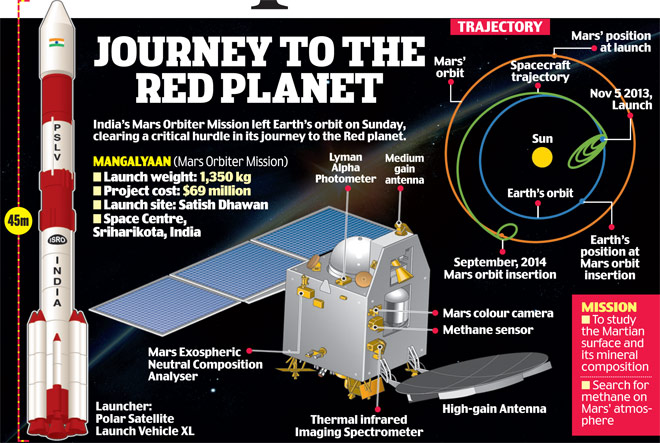

---EXPLORATION OF MARS---

The exploration of Mars has taken place over hundreds of years, beginning in earnest with the invention and development of the telescope during the 1600s. Increasingly detailed views of the planet from Earth inspired speculation about its environment and possible life – even intelligent civilizations – that might be found there. Probes sent from Earth beginning in the late 20th century have yielded a dramatic increase in knowledge about the Martian system, focused primarily on understanding its geology and habitability potential. Engineering interplanetary journeys is very complicated, so the exploration of Mars has experienced a high failure rate, especially in earlier attempts. Roughly two-thirds of all spacecraft destined for Mars failed before completing their missions, and there are some that failed before their observations could begin. However, missions have also met with unexpected levels of success, such as the twin Mars Exploration Rovers operating for years beyond their original mission specifications.
 

As of 24 September 2014, there are two scientific rovers on the surface of Mars beaming signals back to Earth (Opportunity of the Mars Exploration Rover mission, and Curiosity of the Mars Science Laboratory mission), and five orbiters currently surveying the planet: Mars Odyssey, Mars Express, Mars Reconnaissance Orbiter, Mars Orbiter Mission and MAVEN.


To date, no sample return missions have been attempted for Mars, and one attempted return mission for Mars' moon Phobos (Fobos-Grunt) has failed. On 24 January 2014, NASA reported that current studies on the planet Mars by the Curiosity and Opportunity rovers will now be searching for evidence of ancient life, including a biosphere based on autotrophic, chemotrophic and/or chemolithoautotrophic microorganisms, as well as ancient water, including fluvio-lacustrine environments (plains related to ancient rivers or lakes) that may have been habitable. The search for evidence of habitability, taphonomy (related to fossils), and organic carbon on the planet Mars is now a primary NASA objective.
INDIA'S MARS ORBITER MISSION (MOM)
 Mars Orbiter Mission is India's first interplanetary mission to planet Mars with an orbiter craft designed to orbit Mars in an elliptical orbit. The Mission is primarily technological mission considering the critical mission operations and stringent requirements on propulsion and other bus systems of spacecraft. It has been configured to carry out observation of physical features of mars and carry out limited study of Martian atmosphere with following five payloads: